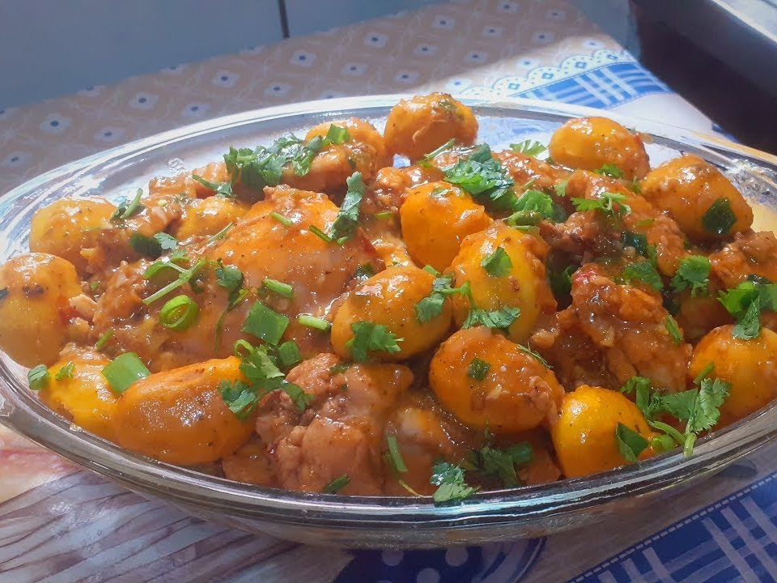

Frango com pequi
O frango com pequi é um prato típico da região Centro-Oeste do Brasil. Ele normalmente é encontrado no Mato Grosso do Sul, e é feito de frango e pequi fritos, normalmente servidos com arroz.
Ingredientes
- 1 frango inteiro
- 15 caroços de pequi
- 10ml de óleo (aproximadamente uma colher de sopa)
- 3 dentes de alho
- 1 cebola grande
- Pimenta-de cheiro e sal a gosto.
Modo de Preparo
Limpe bem o frango e corte-o em pedaços.Em uma panela, coloque o óleo e deixe esquentar bem. Jogue a cebola fatiada e o alho amassado no óleo quente, e refogue até dourar. Junte o frango e misture bem por aproximadamente cinco minutos. Depois adicione os caroços de pequi. Vá colocando água aos poucos, e misture tudo muito bem até ficar encorpado. Assim que o caldo encorpar, tempere com sal e a pimenta a gosto.
Receita retirada do site gshow